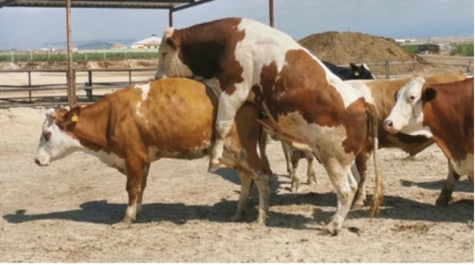
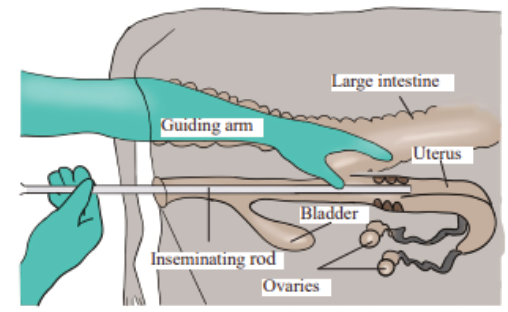

Agriculture for Secondary Schools
Figure 6.4: Natural mating in cattle
(b) Artificial insemination (AI)
Artificial Insemination (AI) refers to the process of depositing semen into the
female reproductive organ by artificial means. AI is more common in cattle
than in other livestock species. In cattle, the cow is inseminated only when it is
observed to be on heat 10 - 14 hours after the onset of the heat period. Semen is
collected from male animals by artificial means using appropriate facilities and
materials. The portion of semen in diluted form or fresh is deposited into the
uterus or uterine horn of the cow by mechanical means. Placing of the semen
into the female is done timely to meet the ovulated egg for conception. The
process is done under high hygiene to avoid contamination of the semen and
the reproductive system. For successful insemination, the procedure should be
performed by trained personnel. Figure 6.5 demonstrates AI in cattle.
Figure 6.5: Demonstration of artificial insemination in cow
101
Student’s Book Form Two